Insight
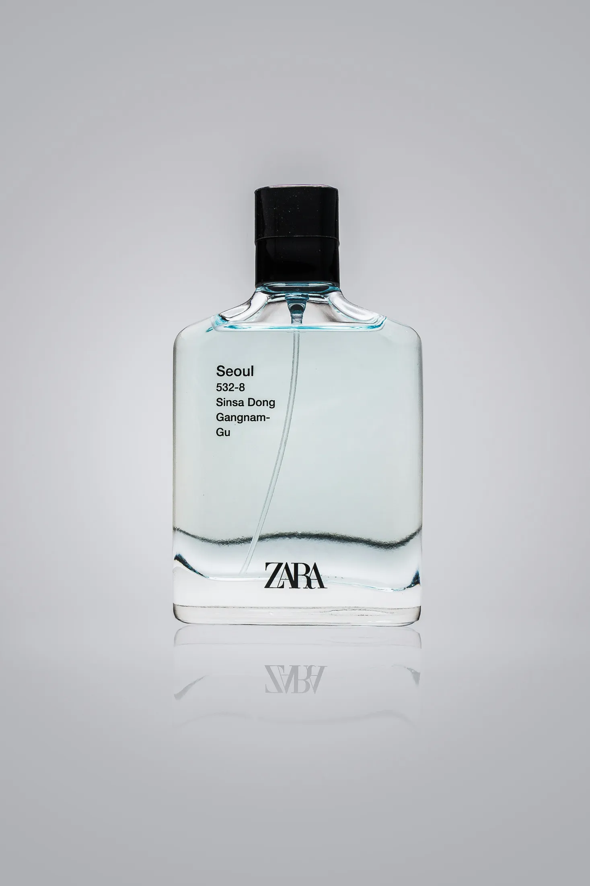
Read
When Less Says More
Simplicity in design isn’t just a trend — it’s a discipline. At Arunika, we often find that stripping away the noise helps highlight what really matters: the message.
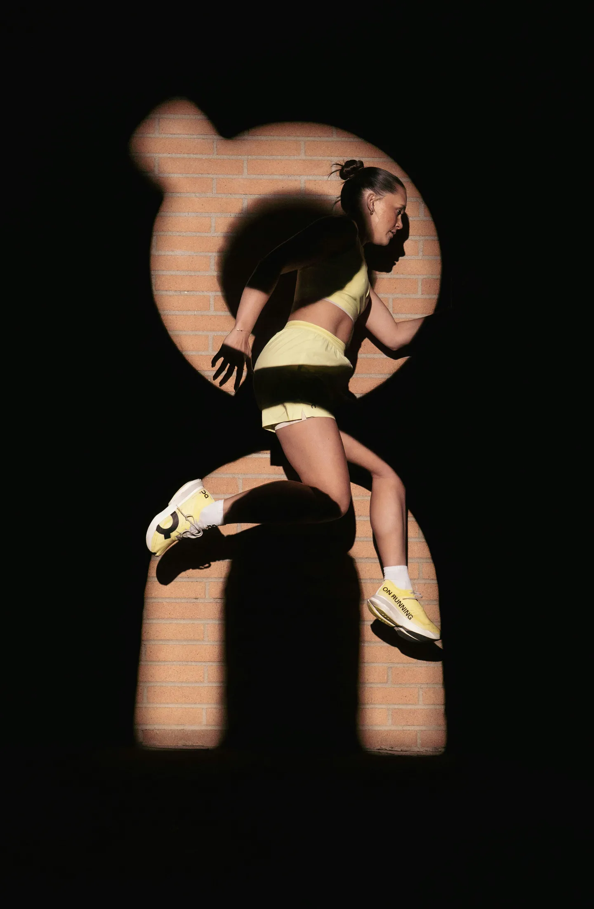
Read
The Role of Gut Feeling in Creative Work
Not every decision in design comes from a moodboard or a data chart. Sometimes, the direction that feels right… just feels right.
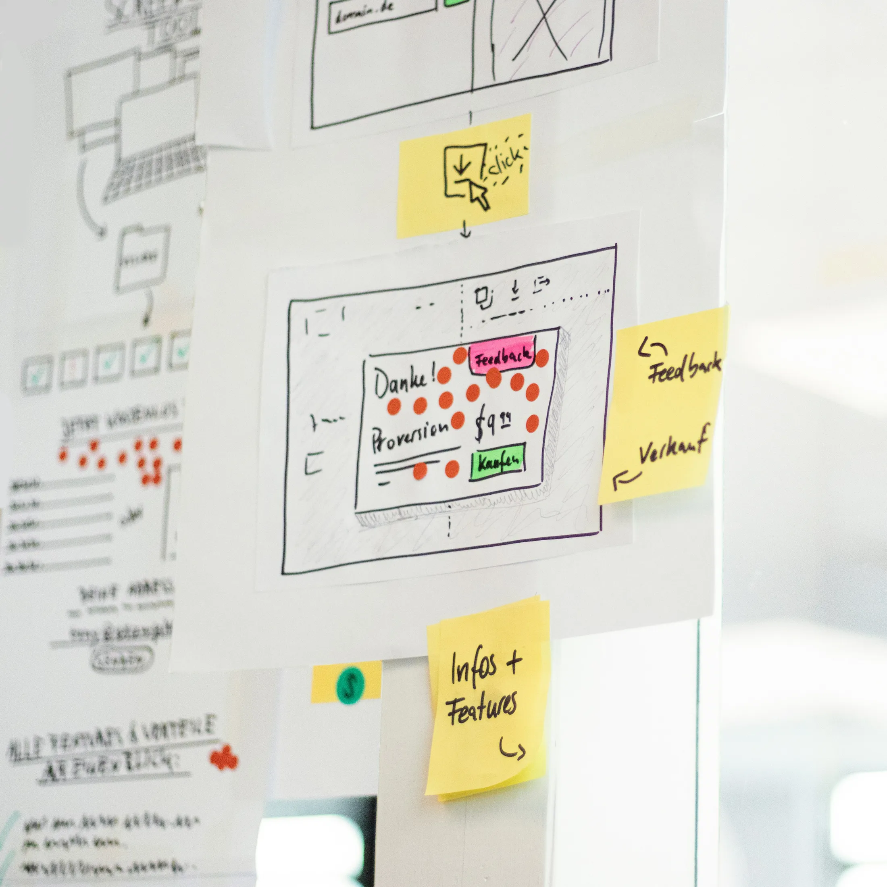
Read
A Smooth Process Makes Better Results
Creative chaos might look cool in movies, but in real projects? It just burns time and energy. That’s why we take the workflow seriously.
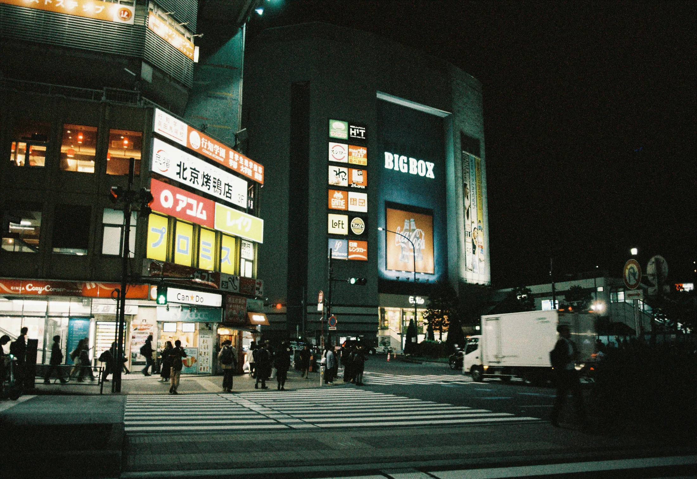
Read
Photography That Doesn’t Just Show — It Feels
In a scroll-heavy world, a strong photo has to do more than just “look nice.” It needs to evoke something — a mood, a story, a sense of place. We approach photography with that in mind.
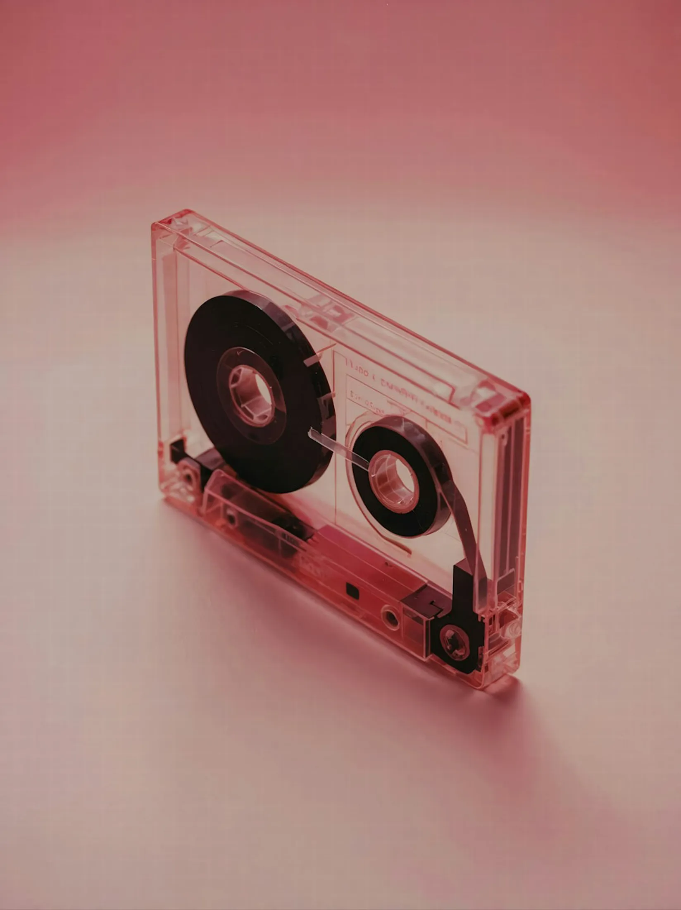
Read
The First 3 Seconds Matter
You only get one first impression — and online, it lasts about three seconds. Whether it’s a landing page, a campaign visual, or a product photo.
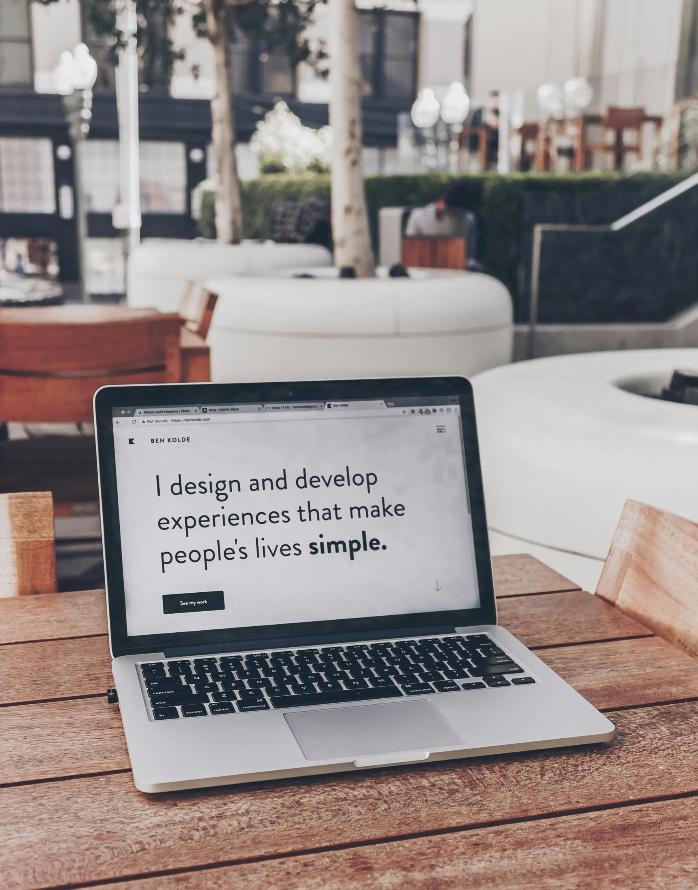
Read
Why Websites Shouldn’t Try Too Hard
We’ve all seen them — websites with a thousand moving parts, flashy animations, and unclear navigation. They look cool… until you try to use them.
Read
Visual Consistency Isn’t Optional Anymore
In the age of multi-platform everything, consistency is power. If your Instagram looks one way, your website another, and your packaging something else entirely.
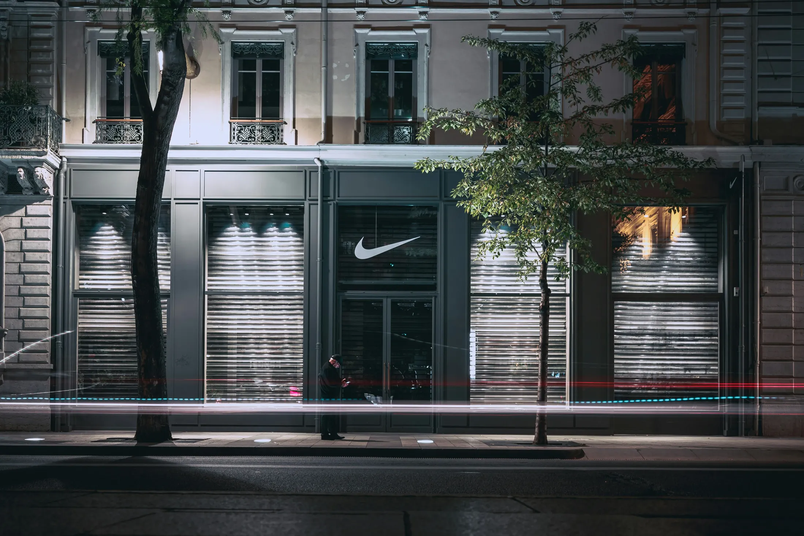
Read
Not Every Brand Needs to Shout
There’s a misconception that brands need to be loud to stand out. But some of the most iconic ones speak with quiet confidence.
Read
Why Your Brand Should Feel Like a Person
A strong brand isn’t just seen — it’s felt. That feeling often comes from treating the brand like a living character.
Read
Before We Design, We Listen
We don’t start with moodboards. We start with questions. What are you trying to say? Who are you speaking to? What’s holding your brand back? Only after we’ve listened — really listened.
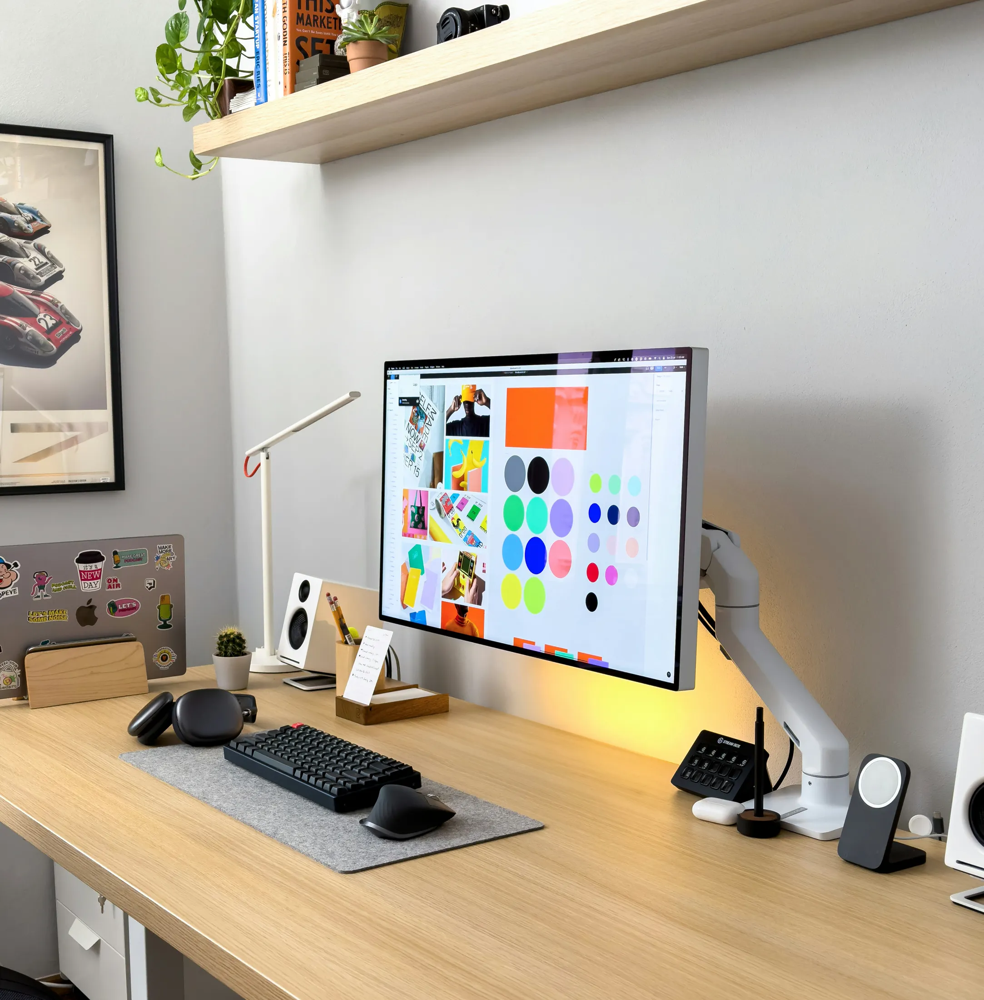
Read
From Moodboard to Launch: The Flow Behind a Brand Project
Every branding project at Arunika moves through a rhythm — exploration, definition, refinement, execution.
Read
Motion Design: When Movement Tells the Story
We love motion not just because it looks cool — but because it guides attention. A subtle scroll animation, a fade between sections, or a kinetic CTA button can turn a static layout into a story in motion.
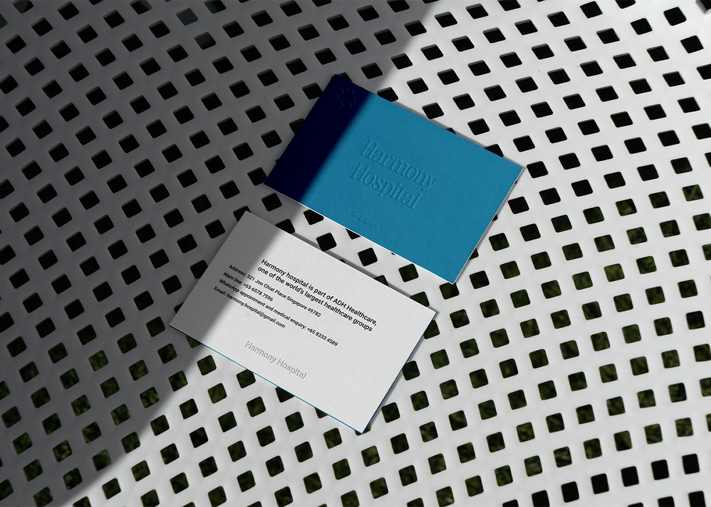
Read
Design with Restraint
Restraint is an underrated skill in creative work. There’s always the temptation to add more — more gradients, more animations, more content.
Read
Creative Work Takes Trust — Not Just Talent
One thing we’ve learned: even the best creative ideas fall flat without trust between client and team. Trust allows space to explore, to experiment, and to push things further.
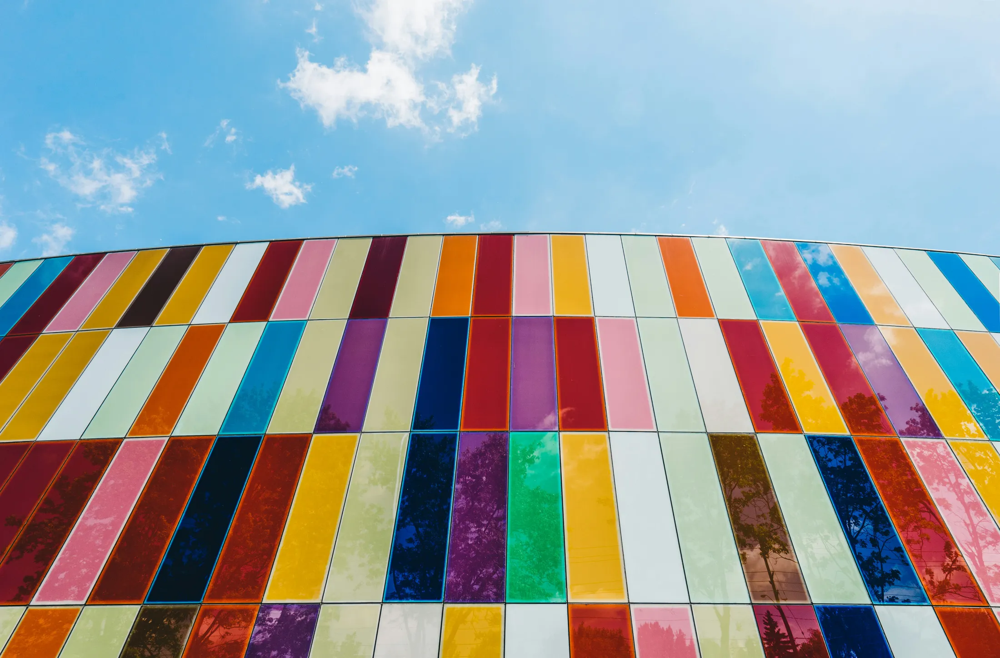
Read
Colors Aren’t Just Aesthetic — They’re Strategy
Every color choice sends a message. Warm tones feel personal and welcoming, deep colors feel premium, high contrast feels bold.
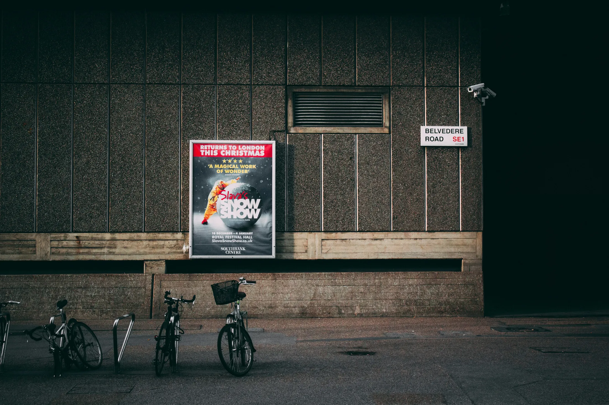
Read
Design Isn’t Finished Until It’s Launched (and Lived)
It’s easy to think a project is done once the visuals are approved. But for us, that’s just the halfway point. Real design lives in the wild — in how it’s used, seen, adapted.